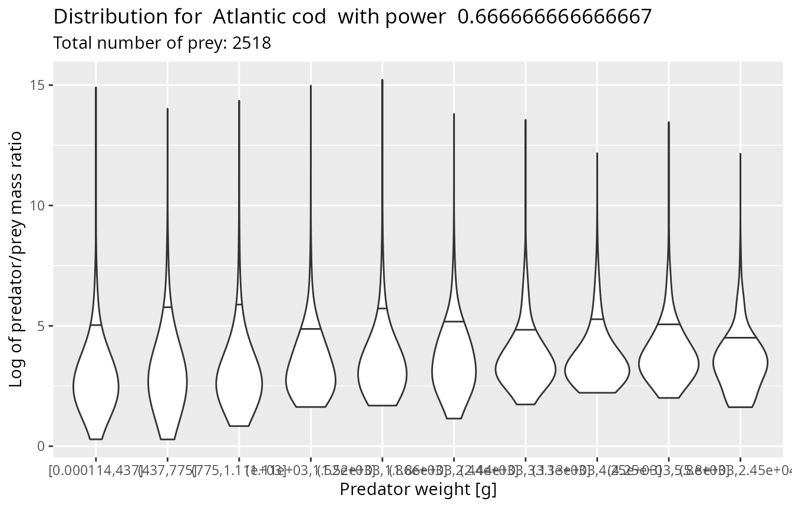
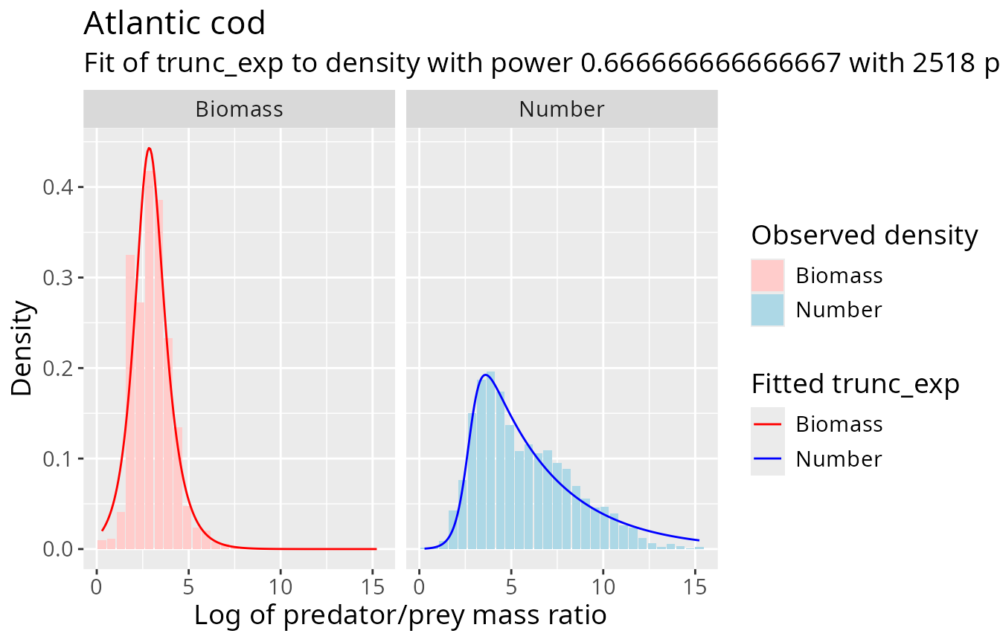

mizerStomach uses stomach-content observations to
estimate how a predator’s prey are distributed over body size (Hyslop 1980; Baker, Buckland, and Sheaves 2014;
Amundsen, Gabler, and Staldal 1996). It works on the log
predator/prey mass ratio
fits a probability distribution to , and can translate that distribution into feeding-kernel parameters for a mizer model (Scott, Blanchard, and Andersen 2014).
This vignette introduces the usual workflow:
- prepare and check stomach-content data;
- assess whether log PPMR is reasonably independent of predator size;
- choose a weighting and fit a distribution;
- inspect the fitted number and biomass distributions; and
- transfer the fit to a mizer model.
For more depth, read vignette("density_functions") for
weighting theory, vignette("PPMR_distributions") for fit
diagnostics, and vignette("feeding_kernels") for the
stomach-to-kernel assumptions and derivation.
Set up
The package includes barnes_data, a set of individual
predator/prey body-mass observations for 12 predator species (Barnes et al. 2010).
head(barnes_data, 4)
#> # A tibble: 4 × 5
#> species w_pred w_prey n_prey log_ppmr
#> <chr> <dbl> <dbl> <dbl> <dbl>
#> 1 Atlantic bluefin tuna 61666 3.51 1 9.77
#> 2 Atlantic bluefin tuna 61666 3.51 1 9.77
#> 3 Atlantic bluefin tuna 61666 3.51 1 9.77
#> 4 Atlantic bluefin tuna 61666 4.63 1 9.50Your own data can aggregate several identical prey observations in one row. It must contain these columns:
| Column | Meaning |
|---|---|
species |
Predator species name |
w_pred |
Predator body mass |
w_prey |
Body mass of one prey individual, in the same unit as
w_pred
|
n_prey |
Number or frequency of prey represented by the row |
Predator and prey masses may use any unit as long as they use the same unit. The examples use grams. Prey identity is not used: the fitted distribution summarizes prey sizes for each predator species.
Validate the observations
validate_ppmr_data() checks the required columns and
adds log_ppmr when it is missing.
cod_data <- validate_ppmr_data(barnes_data, species = "Atlantic cod")
cod_data <- cod_data[c("species", "w_pred", "w_prey", "n_prey", "log_ppmr")]
head(cod_data, 4)
#> # A tibble: 4 × 5
#> species w_pred w_prey n_prey log_ppmr
#> <chr> <dbl> <dbl> <dbl> <dbl>
#> 1 Atlantic cod 0.0154 0.00000270 1 8.65
#> 2 Atlantic cod 0.0508 0.00000639 1 8.98
#> 3 Atlantic cod 0.0940 0.0000138 1 8.83
#> 4 Atlantic cod 0.154 0.0000159 1 9.17If a log_ppmr column is already present, the function
checks it against the two mass columns. It warns about disagreement and
about prey that are heavier than their predator. Before fitting, you
should also deal explicitly with non-positive or non-finite masses,
missing counts, and any sampling artifacts specific to your data source.
Validation supplies a consistent format; it does not decide which
observations are biologically credible.
Check the predator-size assumption
The package fits one marginal log-PPMR distribution per predator
species. This is most useful when that distribution does not change
strongly with predator size. plot_ppmr_violins() divides
the selected observations into ten approximately equally populated
predator-mass classes.
set.seed(1)
plot_ppmr_violins(barnes_data, "Atlantic cod", power = 2 / 3)
#> Warning: `quantiles` for weighted data is not implemented.
#> `quantiles` for weighted data is not implemented.
#> `quantiles` for weighted data is not implemented.
#> `quantiles` for weighted data is not implemented.
#> `quantiles` for weighted data is not implemented.
#> `quantiles` for weighted data is not implemented.
#> `quantiles` for weighted data is not implemented.
#> `quantiles` for weighted data is not implemented.
#> `quantiles` for weighted data is not implemented.
#> `quantiles` for weighted data is not implemented.
The small random perturbation used to separate tied predator masses
is why the example sets a seed. A systematic shift in the violin
distributions suggests that a single species-level fit is hiding size
dependence. In that case, consider fitting a restricted predator-size
range with min_w_pred, fitting separate groups, or using a
model that represents the dependence directly.
Other assumptions also matter. The stomach sample should represent the place, season, and predator population for which the kernel will be used, and the smallest and largest prey can be especially sensitive to identification and sampling limits.
Weight the prey observations
For fit_log_ppmr(), row
receives weight
where
is the power argument. Useful choices include:
power |
Distribution emphasized |
|---|---|
0 |
Number of prey individuals in stomachs |
2/3 |
Diet biomass under the package’s surface-area scaling assumption for digestion |
1 |
Prey biomass in stomachs |
lambda - 4/3 |
Feeding-kernel representation used for a mizer model
with resource exponent lambda
|
The best choice depends on the question and on which part of the observed distribution is reliable. Large numbers of tiny prey can dominate a number fit while contributing little biomass. Conversely, a few large prey can dominate a biomass fit.
A fit stores its exponent in the power column.
transform_fit() can analytically express each supported
fitted family at another exponent. It does this by multiplying the
fitted density by the appropriate exponential function of log PPMR and
renormalizing; it does not return to the observations. A direct
fit at the target power can therefore differ when the chosen family is
only an approximation to the data, or when PPMR depends on predator
size.
Fit a distribution
We start with a normal distribution at power = 2/3.
cod_normal <- fit_log_ppmr(
barnes_data,
species = "Atlantic cod",
distribution = "normal",
power = 2 / 3
)
cod_normal
#> mean sd species distribution power min_w_pred
#> Atlantic cod 3.443057 1.276434 Atlantic cod normal 0.6666667 0For the normal family, the estimate is particularly transparent:
mean is the weighted mean of log_ppmr, and
sd is the weighted maximum-likelihood standard deviation.
The weights are the expression above, and multiplying all of them by a
common constant leaves the fit unchanged.
The normal distribution is convenient but is symmetric and has no explicit lower or upper prey-size boundary. A smoothly truncated exponential is often a more flexible description of a feeding range.
cod_truncated <- fit_log_ppmr(
barnes_data,
species = "Atlantic cod",
distribution = "trunc_exp",
power = 2 / 3
)
cod_truncated
#> alpha ll ul lr ur species
#> Atlantic cod -0.9333927 2.79338 2.777 22.28715 19.99663 Atlantic cod
#> distribution power min_w_pred
#> Atlantic cod trunc_exp 0.6666667 0This fit minimizes a weighted negative log-likelihood.
alpha controls the exponential slope, ll and
lr locate the left and right logistic cutoffs, and
ul and ur control how sharp those cutoffs are.
It is a nonlinear five-parameter optimization, so a fit should always be
checked visually. A previous fit can be supplied through
fits to reuse its parameters as starting values:
cod_truncated <- fit_log_ppmr(
barnes_data,
distribution = "trunc_exp",
fits = cod_truncated
)The third family, distribution = "gauss_mix", fits a
two-component normal mixture with weighted EM updates and can be
transferred to mizer as a "gaussian_mixture" predation
kernel. Mixture fits can be sensitive to initialization and nearly
degenerate components, so check the result carefully before using it in
a model.
Diagnose a fit
plot_log_ppmr_fit() shows both views of the same fit.
Blue compares the observed and fitted number distributions
(power = 0); red compares the observed and fitted biomass
distributions (power = 1). The stored fit is transformed to
both powers automatically.
plot_log_ppmr_fit(barnes_data, cod_normal, type = "histogram")
plot_log_ppmr_fit(barnes_data, cod_truncated, type = "histogram")
The empirical curves or bars are descriptive diagnostics, not formal goodness-of-fit tests. Look especially at the tails: the number distribution contains most information about small prey (large PPMR), whereas the biomass distribution highlights large prey (small PPMR). A family that looks adequate at the fitted power can still extrapolate poorly when transformed to another power.
Use get_density() when numerical density values are more
useful than a plot.
log_ppmr_grid <- seq(2, 12, length.out = 6)
data.frame(
log_ppmr = log_ppmr_grid,
density = get_density(log_ppmr_grid, cod_truncated)
)
#> log_ppmr density
#> 1 2 0.1608592318
#> 2 4 0.2415961441
#> 3 6 0.0386598929
#> 4 8 0.0059783967
#> 5 10 0.0009243795
#> 6 12 0.0001429275Multiple species can be fitted in one call. They are fitted independently and returned as one row per species.
tuna_fits <- fit_log_ppmr(
barnes_data,
species = c("Albacore", "Yellowfin tuna"),
distribution = "normal",
power = 2 / 3
)
tuna_fits
#> mean sd species distribution power
#> Albacore 7.738940 2.060902 Albacore normal 0.6666667
#> Yellowfin tuna 8.215865 1.735238 Yellowfin tuna normal 0.6666667
#> min_w_pred
#> Albacore 0
#> Yellowfin tuna 0For interactive tuning, fit_shiny() provides parameter
sliders, automatic refitting, undo/reset controls, and the same
diagnostic plot. It opens a browser and blocks the R session, so this
example is not run while building the vignette.
tuned_fit <- fit_shiny(barnes_data, fits = cod_truncated)Put a fit into a mizer model
set_kernel_params() supports normal,
truncated-exponential, and Gaussian-mixture fits. It first transforms
the fit from its recorded power to the exponent required by
the model,
where lambda is the resource-spectrum exponent in the
MizerParams object. It then maps a normal distribution to
mizer’s "lognormal" feeding kernel, a truncated exponential
to its "power_law" kernel, or a Gaussian mixture to its
"gaussian_mixture" kernel.
Species names in the fit and model must agree. The Barnes data call
the species "Atlantic cod", while
mizer::NS_params calls it "Cod", so we rename
the fit row before transferring it.
params <- mizer::NS_params
model_cod_fit <- cod_normal
model_cod_fit$species <- "Cod"
rownames(model_cod_fit) <- "Cod"
params <- set_kernel_params(params, model_cod_fit)
subset(
mizer::species_params(params),
species == "Cod",
select = c(species, pred_kernel_type, beta, sigma)
)
#> An object of class "species_params" containing parameters for 1 species:
#> species pred_kernel_type beta sigma
#> Cod lognormal 25.17419 1.276434Only species represented in the fit are changed. Assign the return
value, as above, because the input params object is not
modified in place.
extract_fit() performs the reverse conversion. It is
useful for inspecting existing kernels with the same plotting and
transformation tools, or as the starting point for manual changes.
extracted <- extract_fit(params)
extracted["Cod", c("species", "distribution", "power", "mean", "sd")]
#> species distribution power mean sd
#> Cod Cod normal 0 4.529247 1.276434The extracted distributions are returned at power = 0,
so they describe the number-weighted log-PPMR representation implied by
the current model kernels.
Where to go next
The other vignettes develop the assumptions behind this workflow:
-
vignette("density_functions", package = "mizerStomach")derives the relationships among number, stomach biomass, diet biomass, and other log-PPMR weightings. -
vignette("PPMR_distributions", package = "mizerStomach")discusses data limitations, predator-size dependence, family choice, and fit diagnostics. -
vignette("feeding_kernels", package = "mizerStomach")derives the transformation from a stomach distribution to a mizer feeding kernel and explains its assumptions.
The practical rule is simple: validate the measurements, inspect the predator-size dependence, fit at a weighting relevant to the biological question, and judge both the number and biomass implications before updating a model.